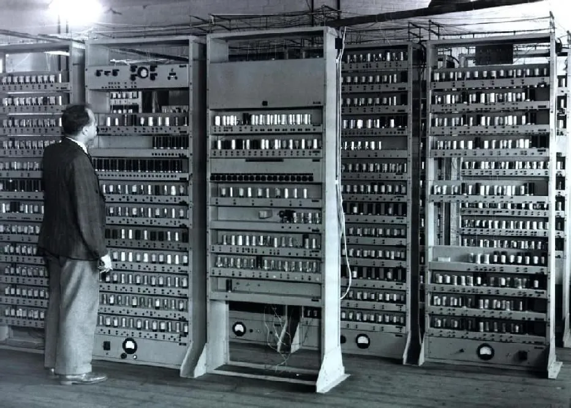
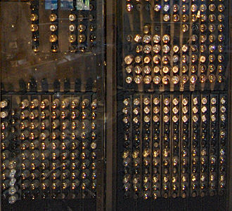
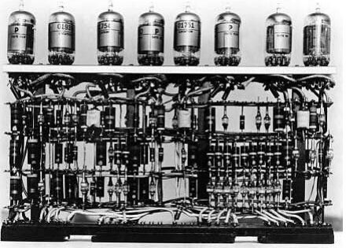
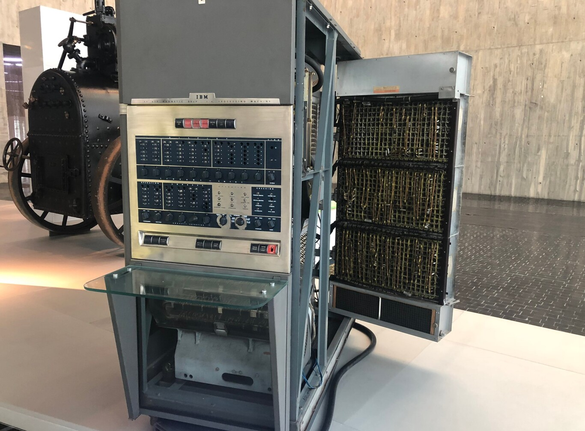

Válvulas de vacío
Los primeros computadores electrónicos utilizaban miles de válvulas de vacío. Eran equipos enormes, costosos, de alto consumo energético y programación compleja en lenguaje máquina.
Tecnología clave: válvulas de vacío.
Características: gran tamaño, calor elevado y baja portabilidad.
Ejemplos: ENIAC y UNIVAC I, IBM 650.